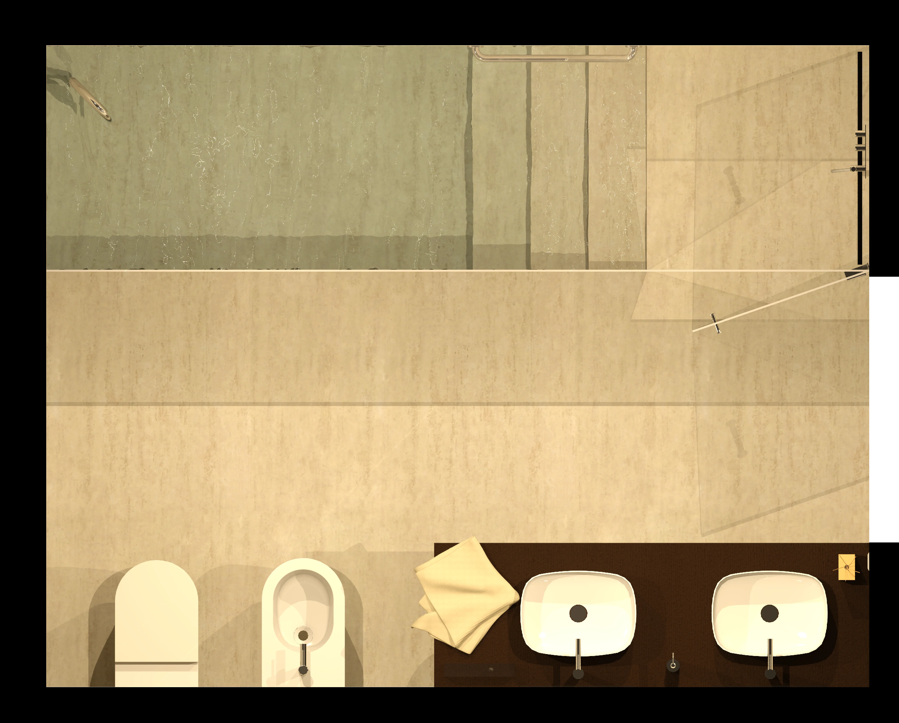
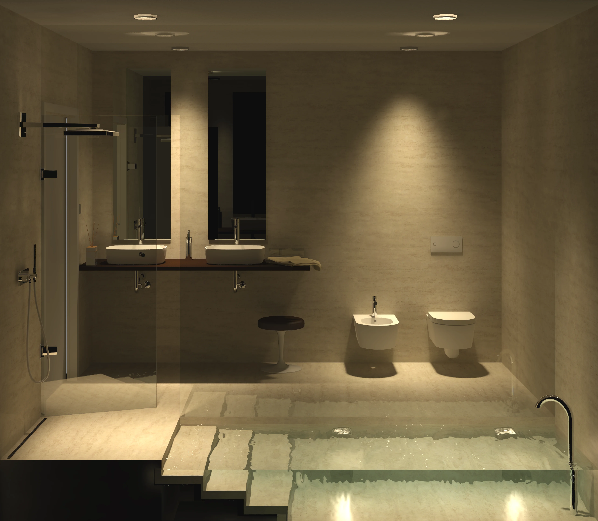
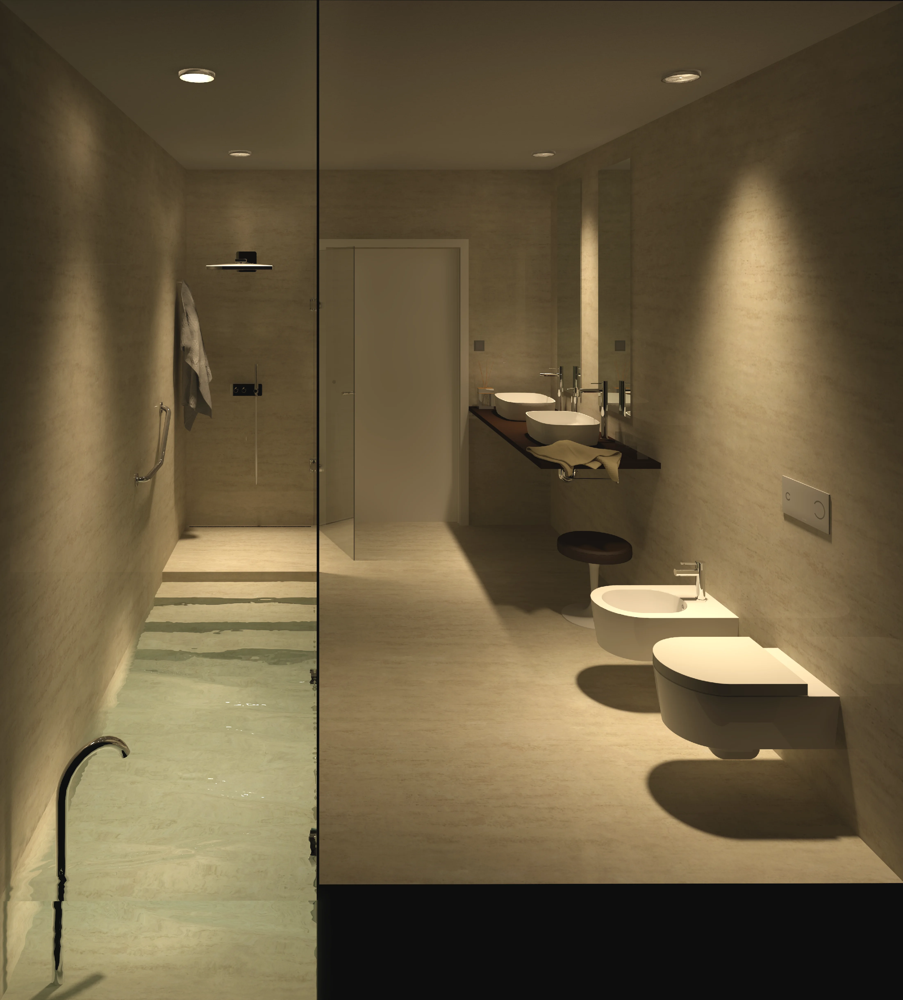
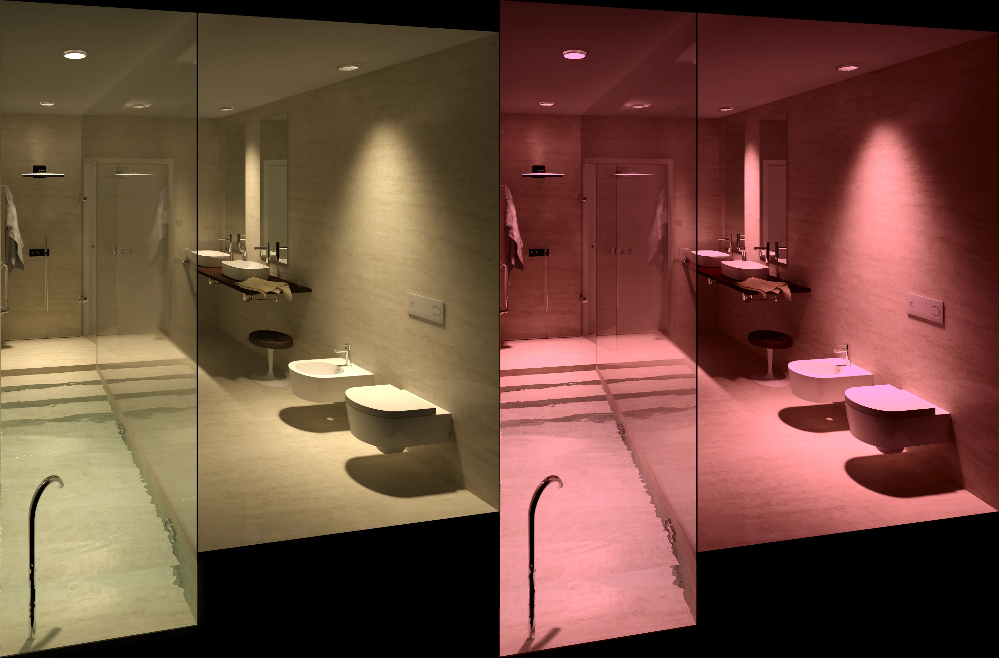

Il progetto prevedeva di pensare un bagno comprensivo di elementi spa per una residenza privata a Pisa. Per questo motivo, complice l’altezza dei soffitti, si è pensato di progettare una vasca a pavimento, con l’aspetto di una piscina indoor, accessibile attraverso una prima zona doccia che prosegue con i gradini di discesa nella vasca vera e propria.

Questa zona, posizionata longitudinalmente alla direzione in cui si sviluppa la stanza, è separata da quest’ultima da un grande vetro, apribile a battente soltanto nella zona della doccia. Dall’altra parte del vetro, la zona lavabi e i due sanitari.

I materiali utilizzati, il travertino per pavimenti e rivestimenti e il legno per il piano dei lavabi, da un lato conferiscono un aspetto sobrio ed elegante, dall’altro, i toni neutri consentono un’ottimale gestione delle luci, tale da consentire anche l’impiego della cromoterapia.

